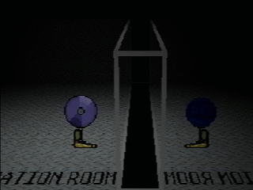
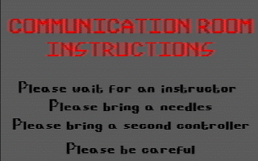

The Connector is a creature that has been spotted in every neagtive disc except Disc 0.
It has been in every one of them in one way or another.
The most common way it would appear is in the body of a player character in the "Communication Room"

Little is known about The Connector. It seems to be an AI programmed by presumably Rainer.
It doesn't seem to resemble anybody from the timeline.
The "Communication Room" was first found in Disc -2.
The same room also later appeared in Disc -1, as shown by the disc searcher's screenshots.
The room contains a note written by an unknown person, as the disc searcher cut out the name from their screenshots.



(This is a fanmade website and is not associated with Petscop)